TechDraw Workbench/es

Introducción
El  Banco de Trabajo Dibujo Técnico se utiliza para producir dibujos técnicos básicos a partir de modelos 3D creados con otro banco de trabajo como Parte, Diseño de Parte, o BIM, o importados desde otras aplicaciones. Cada dibujo es una página, que puede contener varias vistas de objetos dibujables, como como Part::Parte, PartDesign::Diseño de parte, App::Grupos de partes, y grupos de Objetos de Documentos. Los dibujos resultantes pueden ser utilizados para cosas como documentación, instrucciones de fabricación, contratos, permisos, etc.
Banco de Trabajo Dibujo Técnico se utiliza para producir dibujos técnicos básicos a partir de modelos 3D creados con otro banco de trabajo como Parte, Diseño de Parte, o BIM, o importados desde otras aplicaciones. Cada dibujo es una página, que puede contener varias vistas de objetos dibujables, como como Part::Parte, PartDesign::Diseño de parte, App::Grupos de partes, y grupos de Objetos de Documentos. Los dibujos resultantes pueden ser utilizados para cosas como documentación, instrucciones de fabricación, contratos, permisos, etc.
Se pueden añadir a la página acotaciones, secciones, áreas sombreadas, anotaciones y símbolos SVG que posteriormente se pueden exportar a diferentes formatos, como DXF, SVG, y PDF.
Si su objetivo principal es la producción de dibujos 2D complejos y archivos DXF, y no necesita modelado 3D, es posible que FreeCAD no sea la opción adecuada para usted. En su lugar, tal vez le convenga considerar un programa de software específico para el dibujo técnico, como LibreCAD o QCad.
{kind=link}
Encaje
introduced in 1.0: El Entorno de Dibujo Técnico cuenta con una función de ajuste. Esta función permite alinear automáticamente vistas, vistas de sección y cotas al ubicarlas arrastrándolas con el ratón. Con la opción Alineación de vista ajustada activada (por defecto) en Preferencias, las vistas se ajustarán a la alineación con otras vistas cuando estén lo suficientemente cerca (configuración Factor de ajuste de vista). Las cotas también se ajustan a otras cotas paralelas y el texto de la cota se puede ajustar al centro de la línea de cota. El ajuste se puede desactivar temporalmente manteniendo pulsada la tecla Alt.
Herramientas
Página
 Nueva página: agrega una nueva página usando la plantilla predeterminada Plantilla.
Nueva página: agrega una nueva página usando la plantilla predeterminada Plantilla.
 Nueva Página desde Plantilla: Agrega una nueva página usando una Plantilla seleccionada.
Nueva Página desde Plantilla: Agrega una nueva página usando una Plantilla seleccionada.
 Rellenar Campos de Plantilla: Rellena automáticamente los campos de la plantilla con la información del documento. introduced in 1.0
Rellenar Campos de Plantilla: Rellena automáticamente los campos de la plantilla con la información del documento. introduced in 1.0
 Redibujar página: Fuerza una actualización de la página seleccionada.
Redibujar página: Fuerza una actualización de la página seleccionada.
- Imprimir todas las páginas: Imprime todas las páginas de un documento. introduced in 0.21
{kind=link}
 Exportar página como SVG: Guarda la página actual como archivo SVG.
Exportar página como SVG: Guarda la página actual como archivo SVG.
 Exportar página como DXF: Guarda la página actual como archivo DXF.
Exportar página como DXF: Guarda la página actual como archivo DXF.
Vistas de Dibujo Técnico
 Nueva vista: Agrega una representación de uno o más objetos. introduced in 1.0: Puede crear una vista única, un Grupo de Proyección, una Vista de Hoja de Cálculo, una Vista Arquitectura, un Símbolo o una Vista de imagen.
Nueva vista: Agrega una representación de uno o más objetos. introduced in 1.0: Puede crear una vista única, un Grupo de Proyección, una Vista de Hoja de Cálculo, una Vista Arquitectura, un Símbolo o una Vista de imagen.
- Vista Quebrada: Agrega una vista quebrada de uno o más objetos. introduced in 1.0
{kind=link}
- Vista de sección: Inserta una vista de sección transversal de una vista existente.
{kind=link}
- Vista de sección compleja: Inserta una vista de sección transversal de una vista existente basada en un perfil. introduced in 0.21
{kind=link}
- Vista de detalle: Inserta una vista de detalle de una parte de una vista existente.
{kind=link}
 Grupo de proyección: Abre un cuadro de diálogo para crear múltiples vistas de un objeto desde diferentes direcciones. introduced in 1.0: En su lugar, se puede usar la herramienta Insertar Vista.
Grupo de proyección: Abre un cuadro de diálogo para crear múltiples vistas de un objeto desde diferentes direcciones. introduced in 1.0: En su lugar, se puede usar la herramienta Insertar Vista.
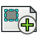
Grupo de clips: Inserta un grupo de clips.
{kind=link}
- Insertar SVG: Inserta un símbolo de un archivo SVG en una página. introduced in 1.0: En su lugar, se puede utilizar la herramienta Insertar Vista.
{kind=link}
- Imagen de mapa de bits: Inserta una imagen PNG o JPG mapa de bits en una página. introduced in 1.0: En su lugar, se puede utilizar la herramienta Vista de inserción.
{kind=link}
- Compartir vista: Comparte una vista entre varias páginas.
{kind=link}
- Forma del proyecto: Crea proyecciones de formas en la Vista 3D.
{kind=link}
Vistas desde otros entornos de trabajo
 Vista activa: Inserta una vista de la vista 3D activa.
Vista activa: Inserta una vista de la vista 3D activa.
 Vista de borrador: Inserta una vista de un objeto del Entorno de Trabajo Borrador.
Vista de borrador: Inserta una vista de un objeto del Entorno de Trabajo Borrador.
 Vista BIM: Inserta una vista de un objeto BIM Workbench Plano de Sección. introduced in 1.0: En su lugar, se puede utilizar la herramienta Insertar Vista.
Vista BIM: Inserta una vista de un objeto BIM Workbench Plano de Sección. introduced in 1.0: En su lugar, se puede utilizar la herramienta Insertar Vista.
 Vista de Hoja de Cálculo: Inserta una vista de una hoja del Entorno de Trabajo Hoja de Cálculo. introduced in 1.0: En su lugar, se puede utilizar la herramienta Insertar Vista.
Vista de Hoja de Cálculo: Inserta una vista de una hoja del Entorno de Trabajo Hoja de Cálculo. introduced in 1.0: En su lugar, se puede utilizar la herramienta Insertar Vista.
Cotas
A continuación se enumeran algunas herramientas de acotación en Atributos/Modificaciones, Formato/Organizar Dimensiones y Anotaciones .
 Cota: agrega una dimensión de manera contextual (es una herramienta de asignación de cotas inteligente). introduced in 1.0
Cota: agrega una dimensión de manera contextual (es una herramienta de asignación de cotas inteligente). introduced in 1.0
 Cota de longitud: Agrega una cota de longitud.
Cota de longitud: Agrega una cota de longitud.
 Cota Horizontal: Agrega una cota de longitud horizontal.
Cota Horizontal: Agrega una cota de longitud horizontal.
 Cota de Vertical: Agrega una Cota de longitud vertical.
Cota de Vertical: Agrega una Cota de longitud vertical.
- Cota de Radio: Agrega una radio de radio a un círculo o arco circular.
{kind=link}
- Cota de Diámetro: Agrega una cota de diámetro a un círculo o un arco circular.
{kind=link}
- Dimensión Angular: Agrega una dimensión angular entre dos bordes rectos.
{kind=link}
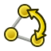
Dimensión Angular desde 3 Puntos: Agrega una dimensión angular usando tres vértices.
{kind=link}
 Anotación de Área: Agrega una dimensión de área a una cara. introduced in 1.0
Anotación de Área: Agrega una dimensión de área a una cara. introduced in 1.0
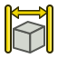
Cota de Extensión Horizontal: Agrega una cota de extensión horizontal.
{kind=link}
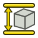
Nueva Extensión Vertical: Agrega una dimensión de Extensión Vertical. introduced in 0.19
{kind=link}
 Reparar Referencias de Cotas: Permite ajustar las referencias geométricas 2D o 3D de una cota. introduced in 0.21
Reparar Referencias de Cotas: Permite ajustar las referencias geométricas 2D o 3D de una cota. introduced in 0.21
patrón de líneas o trama
- Image Hatch: Aplica un patrón de sombreado desde un archivo a una cara.
{kind=link}
- Sombreado Geométrico: Aplica un patrón de sombreado a una cara utilizando una especificación PAT de Autodesk.
{kind=link}
Símbolos
 Símbolo de Soldadura: Agrega especificaciones de soldadura a una línea de referencia existente.
Símbolo de Soldadura: Agrega especificaciones de soldadura a una línea de referencia existente.
 Símbolo de Acabado Superficial: Agrega un símbolo de acabado superficial a una página. introduced in 0.21
Símbolo de Acabado Superficial: Agrega un símbolo de acabado superficial a una página. introduced in 0.21
 Ajuste de Orificio/Eje: agrega tolerancias de orificio o eje usando la norma ISO 286 a una cota. introduced in 0.21
Ajuste de Orificio/Eje: agrega tolerancias de orificio o eje usando la norma ISO 286 a una cota. introduced in 0.21
Apilamiento
- Apilamiento Superior: mueve las vistas a la parte superior del orden de apilamiento. introduced in 0.21
{kind=link}
- Fondo de la Pila: Mueve las vistas a la parte inferior del orden de apilamiento. introduced in 0.21
{kind=link}
- Apilar: Mueve las vistas un nivel hacia arriba en el orden de apilamiento. introduced in 0.21
{kind=link}
- Apilar hacia Abajo: Mueve las vistas un nivel hacia abajo en el orden de apilamiento. introduced in 0.21
{kind=link}
Alineación
Atributos/Modificaciones
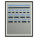
Seleccionar atributos de Línea, espaciado en Cascada y distancia Delta: Selecciona los atributos (estilo, ancho y color) para las nuevas líneas cosméticas y líneas centrales, y especifica el espaciado en cascada y la distancia delta.
{kind=link}
- Cambiar atributos de Línea: Cambia los atributos (estilo, ancho y color) de las líneas cosméticas y las líneas centrales.
{kind=link}
- Extender línea: Extiende una línea cosmética o línea central en ambos extremos.
{kind=link}
- Acortar línea: Acorta una línea cosmética o línea central en ambos extremos.
{kind=link}
- Alternar bloqueo de Vista: Bloquea o desbloquea la posición de una vista.
{kind=link}
- Vista de sección de Posición: Alinea ortogonalmente una vista de sección con su vista de origen.
{kind=link}
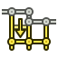
Align Horizontal Chain Dimensions: Alinea las acotaciones horizontales para crear una cota en cadena.
{kind=link}
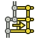
Align Vertical Chain Dimensions:Alinea las acotaciones verticales para crear una cota en cadena.
{kind=link}
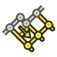
Align Oblique Chain Dimensions: Alinea las acotaciones oblicuas para crear una cota en cadena.
{kind=link}
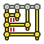
Cascade Horizontal Dimensions:Distribuye de manera uniforme las acotaciones horizontales.
{kind=link}
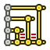
Cascade Vertical Dimensions: Distribuye de manera uniforme las acotaciones verticales.
{kind=link}
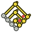
Cascade Oblique Dimensions: Distribuye de manera uniforme las acotaciones oblicuas.
{kind=link}
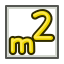
Area Annotation: Calcula el área de las caras seleccionadas e inserta una anotación de área.
{kind=link}
- Arc Length Annotation: Calcula la longitud de arco de los bordes seleccionados e inserta una anotación de longitud de arco. introduced in 1.0
{kind=link}
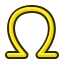
Customize Format Label: Personaliza el formato del texto de un globo o del texto de una cota, y permite añadir símbolos GD&T y otros caracteres especiales.
{kind=link}
Líneas de centro/Roscados
- Líneas Centrales del Círculo: Agrega líneas centrales a círculos y arcos.
{kind=link}
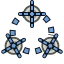
Líneas Centrales de los Círculos de los Pernos: Agrega líneas centrales a un patrón circular de círculos.
{kind=link}
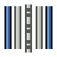
Vista Lateral del Orificio con Rosca Cosmética: Agrega una rosca cosmética a la vista lateral de un orificio.
{kind=link}
- Vista Inferior del Orificio con Rosca Cosmética: Agrega una rosca cosmética a la vista superior o inferior de los orificios.
{kind=link}
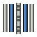
Vista lateral del Perno con Rosca Cosmética: Agrega una rosca cosmética a la vista lateral de un perno/tornillo/varilla.
{kind=link}
- Vista Inferior del Perno con Rosca Cosmética: Agrega una rosca cosmética a la vista superior o inferior de pernos/tornillos/varillas.
{kind=link}
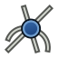
Vértices de Intersección Cosmética: Agrega vértices cosméticos en la(s) intersección(es) de los bordes seleccionados.
{kind=link}
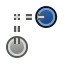
Vértice de Desplazamiento: Agrega un vértice cosmético en un desplazamiento especificado desde un vértice seleccionado. introduced in 1.0
{kind=link}
- Círculo Cosmético de 1 Punto: Agrega un círculo cosmético basado en un vértice. introduced in 1.0
{kind=link}
- Círculo Cosmético de 2 Puntos: Agrega un círculo cosmético basado en dos vértices.
{kind=link}
- Círculo Cosmético de 3 Puntos: Agrega un círculo cosmético basado en tres vértices.
{kind=link}
- Arco Cosmético: Agrega un arco cosmético en sentido contrario a las agujas del reloj basado en tres vértices.
{kind=link}
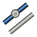
Línea Paralela Cosmética: Agrega una línea cosmética paralela a otra línea que pasa por un vértice.
{kind=link}
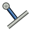
Línea Cosmética Perpendicular: Agrega una línea cosmética perpendicular a otra línea que pasa por un vértice.
{kind=link}
Formatear/Organizar Cotas
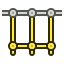
Cota de Cadena Horizontal: Crea una secuencia de cotas horizontales alineadas.
{kind=link}
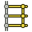
Cota de Cadena Vertical: Crea una secuencia de dimensiones verticales alineadas.
{kind=link}
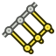
Cota de Cadena Oblicua: Crea una secuencia de dimensiones oblicuas alineadas.
{kind=link}
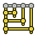
Coordenada Horizontal: Crea múltiples cotas horizontales espaciadas uniformemente a partir de la misma línea base.
{kind=link}
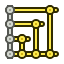
Coordenada Vertical: Crea múltiples cotas verticales espaciadas uniformemente a partir de la misma línea base.
{kind=link}
- Coordenada Oblicua: Crea múltiples cotas oblicuas espaciadas uniformemente a partir de la misma línea base.
{kind=link}
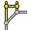
Dimensión de Chaflán Horizontal: crea una dimensión de tamaño y ángulo horizontal para un chaflán.
{kind=link}
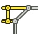
Dimensión de Chaflán Vertical: Crea una cota de tamaño y ángulo vertical para un chaflán.
{kind=link}
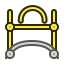
Cota de Longitud de Arco: Crea una cota de longitud de arco.
{kind=link}
- Insertar Prefijo '⌀': Inserta un símbolo '⌀' al principio del texto de la cota.
{kind=link}
- Insertar prefijo '□': Inserta un símbolo '□' al principio del texto de la cota.
{kind=link}
- Insertar Prefijo 'n×': Inserta un contador de características repetidas al principio del texto de la cota. introduced in 1.0
{kind=link}
- Eliminar Prefijo: Elimina todos los símbolos al principio del texto de la cota.
{kind=link}
- Aumentar Decimales: Aumenta el número de decimales del texto de la cota.
{kind=link}
- Disminuir Decimales: Disminuye el número de decimales del texto de la cota.
{kind=link}
Anotaciones
 Anotación de texto: Agrega un bloque de texto plano como anotación.
Anotación de texto: Agrega un bloque de texto plano como anotación.
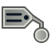
Anotación de texto enriquecido: Agrega un bloque de texto enriquecido como anotación a una línea de referencia o una vista.
{kind=link}
 Anotación de globo: Agrega una anotación de "globo" a una página.
Anotación de globo: Agrega una anotación de "globo" a una página.
- Dimensión de Cota axonométrica: Agrega una cota de longitud axonométrica. introduced in 0.21
{kind=link}
Añadir lineas
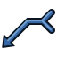
Línea de referencia: Agrega una línea de referencia a una vista
{kind=link}
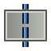
Línea central en la cara: Agrega una línea central a la(s) cara(s) seleccionada(s).
{kind=link}
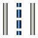
Línea Central entre 2 Líneas: Agrega una línea central entre 2 líneas.
{kind=link}
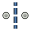
Línea Central entre 2 Puntos: Agrega una línea central entre 2 puntos.
{kind=link}
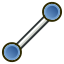
Línea Cosmética a través de 2 Puntos: Agrega una línea cosmética que conecta 2 vértices.
{kind=link}
- Editar Apariencia de Línea: Cambia la apariencia de la(s) línea(s) seleccionada(s).
{kind=link}
- Alternar Visibilidad de Bordes: Muestra u oculta líneas/bordes invisibles en una vista.
{kind=link}
Añadir Vertices
- Vértice Cosmético: Agrega un vértice que no forma parte de la geometría de origen.
{kind=link}
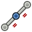
Vértices de Punto Medio: Agrega vértices cosméticos en los puntos medios de los bordes seleccionados.
{kind=link}
- Vértices de Cuadrante: Agrega vértices cosméticos en los puntos de cuarto de los bordes (circulares) seleccionados.
{kind=link}
Miscelania
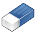
Eliminar objeto cosmético: Elimina objetos cosméticos de una página.
{kind=link}
= Herramientas Obsoletas
- Agregar Vista a Grupo de Recorte: Agrega una vista existente a un grupo de recorte. No disponible en 1.0 and above.
{kind=link}
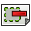
Eliminar Vista de un Grupo de Recorte: Elimina una vista de un grupo de recorte. No disponible en 1.0 and above.
{kind=link}
 Insertar Dimensión de Punto de Referencia - EXPERIMENTAL: Agrega una dimensión de distancia de punto de referencia. No disponible en 1.1 and above.
Insertar Dimensión de Punto de Referencia - EXPERIMENTAL: Agrega una dimensión de distancia de punto de referencia. No disponible en 1.1 and above.
 Vincular Dimensión a Geometría 3D: Vincula una dimensión existente a la geometría 3D (obsoleto). No disponible en 1.1 and above.
Vincular Dimensión a Geometría 3D: Vincula una dimensión existente a la geometría 3D (obsoleto). No disponible en 1.1 and above.
- Mover Vista: Mueve una vista y sus dependientes a una página diferente. No disponible en 1.0 and above.
{kind=link}
 Activar/Desactivar marcos de vista: Activa o desactiva la visualización de marcos de vista, etiquetas y vértices. No disponible en 1.1 and above.
Activar/Desactivar marcos de vista: Activa o desactiva la visualización de marcos de vista, etiquetas y vértices. No disponible en 1.1 and above.
Características adicionales
- Grupos de líneas: Para controlar la apariencia de los distintos tipos de líneas.
- Plantillas: Las plantillas predeterminadas definidas para las páginas de dibujo.
- Sombreado: Explicación de las diferentes técnicas de sombreado.
- Acotación y tolerancias geométricas: Explicación de cómo realizar la acotación y tolerancias geométricas.
Preferencias
 Preferencias: Preferencias para los valores predeterminados de la página de dibujo, como el ángulo de proyección, los colores, los tamaños de texto y los estilos de línea.
Preferencias: Preferencias para los valores predeterminados de la página de dibujo, como el ángulo de proyección, los colores, los tamaños de texto y los estilos de línea.
Programación de Scripts
Las herramientas de Dibujo Técnico se pueden usar en macros y desde la consola de Python. Para más información, consulte:
- Documentación de la API generada automáticamente
- Conceptos básicos de scripting de FreeCAD
- Campos de texto editables
Limitaciones
- No corte, copie ni pegue objetos de Dibujo Técnico en la vista de árbol, ya que esto generalmente no funciona correctamente.
- No arrastre objetos de Dibujo Técnico en la vista de árbol con el ratón.
Tutoriales
- Tutorial básico de TechDraw: Introducción a la creación de dibujos con el Entorno de Trabajo de Dibujo Técnico.
- Creación de una nueva plantilla: Instrucciones para crear una nueva plantilla de página en Inkscape para usar con el Entorno de Trabajo de Dibujo Técnico.
- Generador de plantillas en TechDraw: Instrucciones para crear una macro que genere una plantilla básica.
Unas pocas líneas de código adicionales dan como resultado una herramienta como Ayudante de plantillas para macros.
- Medición de ángulos en agujeros: Instrucciones para agregar líneas centrales y representaciones de ángulos en agujeros.
- Miscellaneous: Instrucciones para diferentes configuraciones, como marcas centrales, etc.
- TechDraw Pitch Circle Tutorial: Instrucciones para agregar un círculo de tono.
Tutoriales de vídeo de sliptonic
- Ambiente de trabajo TechDraw Parte 1 (Básico), Parte 2 (Dimensiones), Parte 3 (Multiview)
- Ambiente de trabajo de TechDraw Parte 4 (Sección y detalle), Parte 5 (Plantillas de personalización)
Desarrollo
¿Quiere saber más sobre el futuro del Entorno de Trabajo Dibujo Técnico? Visite la página de la hoja de ruta de Dibujo Técnico para obtener más información.
- Page: New Page, New Page From Template, Update Template Fields, Redraw Page, Print All Pages, Export Page as SVG, Export Page as DXF
- TechDraw Views: New View, Broken View, Section View, Complex Section View, Detail View, Projection Group, Clip Group, Insert SVG, Bitmap Image, Share View, Project Shape
- Views From Other Workbenches: Active View, Draft View, BIM View, Spreadsheet View
- Dimensions: Dimension, Length Dimension, Horizontal Length Dimension, Vertical Length Dimension, Radius Dimension, Diameter Dimension, Angle Dimension, Angle Dimension From 3 Points, Area Annotation, Horizontal Extent Dimension, Vertical Extent Dimension, Repair Dimension References
- Hatching: Image Hatch, Geometric Hatch
- Symbols: Weld Symbol, Surface Finish Symbol, Hole/Shaft Fit
- Stacking: Stack Top, Stack Bottom, Stack Up, Stack Down
- Attributes/Modifications: Select Line Attributes, Cascade Spacing and Delta Distance, Change Line Attributes, Extend Line, Shorten Line, Toggle View Lock, Position Section View, Align Horizontal Chain Dimensions, Align Vertical Chain Dimensions, Align Oblique Chain Dimensions, Cascade Horizontal Dimensions, Cascade Vertical Dimensions, Cascade Oblique Dimensions, Area Annotation, Arc Length Annotation, Customize Format Label
- Centerlines/Threading: Circle Centerlines, Bolt Circle Centerlines, Cosmetic Thread Hole Side View, Cosmetic Thread Hole Bottom View, Cosmetic Thread Bolt Side View, Cosmetic Thread Bolt Bottom View, Cosmetic Intersection Vertices, Offset Vertex, Cosmetic 1 Point Circle, Cosmetic 2 Point Circle, Cosmetic 3 Point Circle, Cosmetic Arc, Cosmetic Parallel Line, Cosmetic Perpendicular Line
- Format/Organize Dimensions Horizontal Chain Dimension, Vertical Chain Dimension, Oblique Chain Dimension, Horizontal Coordinate Dimension, Vertical Coordinate Dimension, Oblique Coordinate Dimension, Horizontal Chamfer Dimension, Vertical Chamfer Dimension, Arc Length Dimension, Insert '⌀' Prefix, Insert '□' Prefix, Insert 'n×' Prefix, Remove Prefix, Increase Decimal Places, Decrease Decimal Places
- Annotations: Text Annotation, Rich Text Annotation, Balloon Annotation, Axonometric Length Dimension
- Add Lines: Leader Line, Centerline on Face, Centerline Between 2 Lines, Centerline Between 2 Points, Cosmetic Line Through 2 points, Edit Line Appearance, Toggle Edge Visibility
- Add Vertices: Cosmetic Vertex, Midpoint Vertices, Quadrant Vertices
- Miscellaneous: Remove Cosmetic Object
- Additional: Line Groups, Templates, Hatching, Geometric dimensioning and tolerancing, Preferences
- Getting started
- Installation: Download, Windows, Linux, Mac, Additional components, Docker, AppImage, Ubuntu Snap
- Basics: About FreeCAD, Interface, Mouse navigation, Selection methods, Object name, Preferences, Workbenches, Document structure, Properties, Help FreeCAD, Donate
- Help: Tutorials, Video tutorials
- Workbenches: Std Base, Assembly, BIM, CAM, Draft, FEM, Inspection, Material, Mesh, OpenSCAD, Part, PartDesign, Points, Reverse Engineering, Robot, Sketcher, Spreadsheet, Surface, TechDraw, Test Framework
- Hubs: User hub, Power users hub, Developer hub